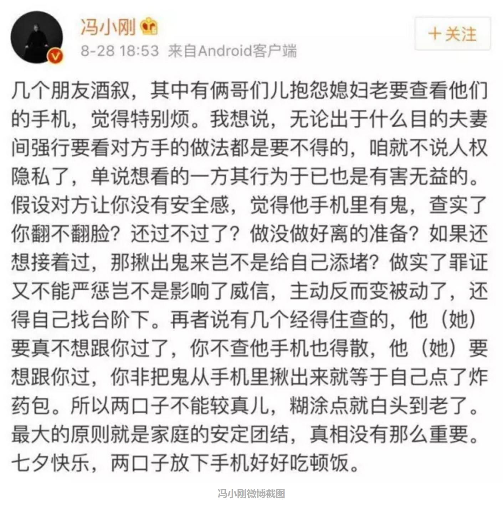

婚姻就是男女双方在平等自愿的基础上建立的长期契约关系。婚姻泛指适龄男女按照婚姻法在经济生活、精神物质等方面的自愿结合，并取得法律、伦理、医学、政治等层面的认可，双方共同生产生活并组成家庭的一种社会现象。形成人际间亲属关系的社会结合或法律约束。根据观念和文化不同，通常以一种亲密或性的表现形式被承认，以婚礼的方式来宣告成立。结婚的原因很多，如法律、情感、经济、精神信仰、社会、个人生活、生理心理的需要。通常，婚姻是组成家庭的基础和根据。双方家长称“亲家”或“姻亲”。
古代婚姻中的鄙视链
2020-08-30 22:23
由于在为官选士制度上是实行九品中正制，所以为官从政这一方面就一直被门阀大族垄断，他们一般政治地位高，相应文化、经济地位也高，门当户对就是这个时候提出来的，在以后几千年的时间里甚至到了现在，这种缔结婚姻的观念也深深影响着一些人们。...详情
相关新闻
内容来自
我害怕自己的婚姻会像爸妈那样失败
2020-08-30 16:02
作为孩子的我们，待到成年之后，回看爸妈的婚姻，终于看懂了生活的真理、相处的规律。或许你还会发现，千万种感情、哪怕是自己爸妈的婚姻，都只是“别人的日子”。自己的婚姻、自己的幸福，终究在自己手上。...详情
相关新闻
内容来自
婚姻定义
编辑婚姻，由两个人一起生活而组成的合法结合或契约。
婚姻动机不只是在于满足性需求，还有更复杂的动机。
德国社会学家L.穆勒曾归为三种动机，即经济、子女和感情，古代社会，婚姻的主导动机源于妇女是创造财富的活动工具，娶妻是为了增加劳动力，人的性欲在婚姻之外可以得到满足。人类婚姻史的第二时期，妇女劳动范围逐渐变小，财富及继承问题日趋突出，于是关于个人至亲骨肉的后代观念便成了婚姻的主导动机。婚姻是为了生育合法的儿女和照管家室。第三时期，妇女社会地位起了变化，个人自由成为社会生活的基本准则，其次才是生儿育女和权衡经济。现代社会，经济和子女这两个因素在婚前考量和婚后占有的比重仍然占重要地位。婚、姻二字的涵义，分别是男女通过合法手续结为夫妻和结亲的男家，夫或夫之父。所以，婚姻的含义别无其他，仅仅是男女通过合法手续明确关系，得到包括父亲在内的家庭成员的认可，成为一员。
婚姻婚姻禁忌
编辑夫妻之间不能有共同的血缘关系，越远越好。
[2]
城市人或有职业的人都是以门当户对为前置条件
[3]
。婚姻是由两个人的身体状况、精神状况、收入状况决定。
[4]
不是用缘分就可一概而就的。有的人以劳动为生、有的人以歌舞为生、有的人以打工为生、有的人以管理为生、有的人以当官为生、每个人都有自己的特长和职业化问题，所以婚姻还是以门当户对为前提条件。
[5]
追溯到原始时代，就有了所谓的婚姻，这是一种群居高等生命的本能属性，自然法则会用异性相吸的力量，使哺乳类生命繁衍生息。人类的婚姻存在形式以及结合方式，受人类社会环境的影响。不同时代和地区的社会环境，造就了多样的婚姻模式，以及结合方式。科学的意义上看，如果没有婚姻，很多血统就会出现混乱，不利于人类的优良繁衍。
值得指出的是，由于婚姻产生于私有制，所以它一直与人的财产关系密切相关。由于男子是私有制社会的主体，所以女子一直被看作男子的财产，于是多数古代社会是一夫多妻制。而且抢婚、买卖妻妾等现象也源于此。由于私有制的财产由血缘关系中的男性继承，为了保证血缘的纯净，就有了“处女情结”和对女子性行为的严格约束。
[6]
至于在自然小农经济社会中，婚姻则是一种劳动的分工组合，即所谓“男耕女织”，“男主外女主内”。而在现代社会中的老百姓，婚姻则是为了组成一个家庭，在满足人的正常生活需要的同时，承担为家族和社会养育后代的责任和义务，也是人的一种归宿。
群婚及对偶婚
男人的力量优势开始挑战母亲的权威，同时也挑战父亲的权威，这必定在性的分配上有了冲突，而大冲突，争夺性伴侣，甚至会导致群体灭亡。人类学家发现十几万年前，欧洲有一个被称为尼德特人的种族，根据骨骼化石表明，其身材高大，体魄强健，后却神秘消失。是否就是在这样的内部争斗中相互残杀而亡的呢？一方面是生存的本能和性的本能促使力量强大者要获得权利和地位，从而瓦解现有的族群；一方面则是人类的发展要求维持稳定的群体。怎么办？苏联史学家谢苗诺夫《婚姻和家庭的起源》认为，原始人依靠“性禁忌”来维持相对时间的稳定。“性禁忌”要求在狩猎时期或者捕鱼时期，禁止任何的性交活动，甚至禁止接触与女人有关的东西，否则就被认为是触犯神明，乃是死罪。因为狩猎和捕鱼的活动，关系族群的生存，这时候如出现因为性的争夺引发的内乱，势必导致族群的覆亡。
但是，随着狩猎和捕鱼时期不断延长，“性禁忌”也越来越频繁，这不能解决问题，必须有新的限制。恩格斯认为，人类最古老的家庭形式是群婚，他将群婚阶段分解为：一、血缘家庭，即仅仅排斥祖先和子孙之间、双亲和子女之间互为夫妻，其他兄弟姐妹皆可。二是，普那路亚家庭，即同胞（母方的）姐妹和兄弟间，不可性交。他没说明为什么要有这样的限制。至于限制嫡亲间的通婚是为了保证后代质量的说法也被证明是不科学的。而谢苗诺夫所说的，为了避免内部的混乱和冲突的提法是可认同的：第一种形式，为了防止犯上作乱；第二种，是维持成年雄性的相互宽容，消除嫉妒。
普那路亚家庭形式，必定会使得族群分化为一些氏族。在同一个氏族中，姐妹与兄弟之间，不可通婚。这就开始了不同氏族之间的通婚，进入了族外的群婚阶段。一群男人，共同地与另一氏族的一群女人通婚，反之也是。族外婚，维持了本氏族的和谐，消灭了嫉妒，发展了族群。族外群婚发展到新阶段，就是对偶婚，即，一个男子以一群女子为妻子，其中有个主妻；反之，一个女子也有一群男子为夫，其中有主夫。
但是，随着男性在生产活动中的地位越来越高，必定要挑战母权，久而久之，女人从属于男人，成为了男人的财产。
一夫一妻制
现代的婚姻家庭，要求以爱情为基础，而男女的独立，尤其是经济的独立，消解了经济结合体是必需的形式，女性也不再从属于男性，而同时，爱情也并不一定能够持续。
婚姻形式
编辑从古至今，婚姻有多种形式出现
一夫一妻制是指一名男性与一名女性结为夫妻的婚姻制度，双方同时只有一名配偶，是现时世界上最多国家奉行的婚姻制度。
2．乱婚
无婚姻制度。
3．血婚制
若干兄弟和若干姊妹相互集体通婚，在古代普遍流行过。中国古代妇女结婚后称公婆为“姑舅”，是这个制度存在过的证明。现存的马来式亲属制也是证据。
4．普那路亚婚制
在前者的基础上产生出来。若干姊妹是他们彼此丈夫的共同配偶，若干兄弟是他们彼此妻子的共同配偶。它建立了土兰尼亚式亲属制度和加诺万尼亚式亲属制度。
5．偶婚制
一男一女按照婚姻形式结成配偶，但是不排斥与外人同居。双方都可以随意离婚或分居。
6．一夫多妻制
一个男性同时娶多位女性成为他的妻子。虽然古代中国和中亚民族都的男子都曾经可以娶多位女子，但是这两者仍然有区别。传统中国的男子，他的配偶中只有一位是正妻，其它的都是小妾；而游牧的希伯来人则是简单的多位妻子。狭义上的一夫多妻制是指后者。
7．一妻多夫制
一个妻子同时存在多位丈夫，或者多个男子同时娶一个女子为妻子。藏族曾经存在过这种婚姻模式。
8．单偶制专偶制
和单一配偶结婚，并排斥与外人同居，后面一点是这一制度的根本要素。近代文明社会普遍采用这种婚姻制度。
9．事实婚姻
指未经法律登记，但被社会承认和接受的婚姻。往往出现在婚姻法尚未强制执行的时期，为法律所暂时容忍的婚姻状态。
10．走婚
11．闪婚
婚姻双方相识时间不长就迅速结婚。
12．网婚
在互联网上结为虚拟夫妻。
13．同性婚姻
指同性之间的婚姻关系。
14．冥婚
为已经去世的人举行婚礼，将双方结为夫妻。
婚姻年龄
编辑世界主要国家法定结婚年龄
中国法定结婚年龄男22周岁，女20周岁。
世界主要国家法定结婚年龄如下：伊朗法定结婚年龄9岁；荷兰法定结婚年龄18岁；俄罗斯法定结婚年龄14岁；法国法定结婚年龄15岁；菲律宾法定结婚年龄16岁；韩国法定结婚年龄18岁；日本男18岁、女16岁；巴西16岁；中国香港16岁；中国台湾16岁；美国各州不一，部分州规定，如双方未满成年人年龄，须经父母同意方可结婚，有的州规定男子不满18岁、女子不满16岁者，即使父母同意也不能结婚。爱达荷、密西西比、新泽西和华盛顿等州则允许年满14岁的男孩、年满12岁的女孩结婚。
婚姻婚俗
编辑世界各地婚俗
早期非洲裔美国人：跳扫帚。在美国的黑奴时代，黑人男女是不允许正式结婚生活在一起的。为了向世人宣布他们的爱情和婚约，一对黑人男女和着鼓声的节奏，一起跳过一把扫帚。（扫帚对各种非洲人长期来都具有很重要的意义，因为它意味着新婚夫妇组成家庭的开始。在南部非洲，新娘在婚后的第一天要帮助夫家的其他女性清扫院子，以此表明在住进自己的新家前，她愿意尽职地帮助丈夫的家人承担家务劳动。）直至今日，一些美国黑人还在他们的婚礼上举行这种象征性的仪式。
亚美尼亚：人们放飞两只白鸽，以示爱情和幸福。新娘穿着红色丝绸的服装，头戴饰有羽毛的纸翼。人们还可向新娘投掷硬币。
比利时：新娘可以将其姓名绣在手帕上，在婚礼举行日随身带上它。婚礼后将手帕装入镜框保存，直到家里的另外一个姑娘结婚。
百慕大：百慕大岛民在他们的多层婚礼蛋糕的顶层插上一株小树苗，新婚夫妇要将这株树苗种在家中，这样他们可以目睹树苗伴随着他们的婚姻一起长大。
波黑人：新郎向新娘赠送一串念珠，一本祈祷文，一根上面串着三把钥匙的腰带（用以保护她的贞洁），一顶毛皮帽，一个银的结婚戒指。新娘则向新郎赠送一件用金线和彩色丝绸缝制的衬衣和结婚戒指。婚礼前，伴郎将新郎裹进新娘的斗篷里，以防恶魔侵入，拆散他们相爱的心。
加勒比地区：在巴巴多斯，格林纳达和圣卢西亚，用干果和朗姆酒制作的味道浓郁的蛋糕十分常见。蛋糕的制作方法，由母亲亲手传给女儿，并且各自对其加以修饰。人们把这种蛋糕叫作“一磅”蛋糕，因为制作这种蛋糕需要面粉、棕糖、黄油、糖霜樱桃、葡萄干、李子、红醋栗各一磅，加上一打鸡蛋和调味品。制作蛋糕的干果要在朗姆酒中浸泡并在瓦罐中保存两个星期至6个月。
克罗地亚：由已婚的女性亲戚摘下新娘的面纱，换上一块头巾和一条围裙，意味着新娘的已婚新身份。然后由所有的已婚妇女为新娘唱小夜曲。婚礼之后，所有来宾围绕着井走三圈（象征着圣三位一体），并向井中扔苹果（象征着生育）。
捷克共和国：朋友们溜进新娘的院子去种一棵树，然后再用彩带和彩绘的蛋壳将树加以装饰。传说新娘将与这树活得一样长。乡村的新娘还保留着佩带迷迭香花环的古老习俗，以表怀念之情。花环是在婚礼前夕由新娘的朋友编织而成，它象征着智慧、爱情和忠诚。
婚姻纪念日
编辑结婚周年一般有以下的称呼：
一年：纸婚
二年：布婚
三年：皮婚
四年：丝婚/绢婚
五年：木婚
六年：铁婚
七年：铜婚/毛婚
八年：电器婚/青铜婚
九年：陶器婚
十年：锡婚
十一年：钢婚
十二年：绕仁婚、丝婚
十三年：花边婚
十四年：象牙婚
十五年：水晶婚
二十年：瓷婚
二十五年：银婚
三十年：珍珠婚
四十年：红宝石婚
四十五年：蓝宝石婚
五十年：金婚
五十五年：翠玉婚/绿宝石婚
六十年：钻石婚
七十年：白金婚
婚姻法学名词
编辑婚姻概念
作为婚姻法调整对象、婚姻法学研究对象的“婚姻”，必须有一个明确的法学概念。婚姻的法学概念应当与民法学中的民事行为概念相对应，并能在婚姻法学体系中始终如一。它应涵盖以下三层含义：以男女两性结合为基础；以共同生活为目的；具有夫妻身份的公示性。它应包括各种合法婚姻和违法婚姻，能将其与婚前性行为、纳妾、姘居、非婚同居等现象区分开来，而应避免和结婚、婚姻关系等法学念混为一谈。
以男女两性结合为基础
这是婚姻的自然层次上的含义。男女两性的生理差别、人类固有的性本能，是婚姻赖以形成的自然因素，也是婚姻固有的自然属性，这种自然属性是婚姻关系区别于其他社会关系的重要特征，如果没有上述种种自然因素，人类社会根本就不可能出现婚姻。
纵观整个婚姻发展史，婚姻都是以男女两性的结合为内涵。恩格斯在《家庭、私有制和国家的起源》一文中，不仅研究了婚姻的起源和发展，而且对未来社会的婚姻进行了推想。蒙昧时代、野蛮时代的群婚制、对偶婚制下的婚姻是异性之间的结合，与文明时代相适应的以通奸和卖淫为补充的一夫一妻制，从名称本身就说明了它是男女两性之间的结合。从恩格斯对一夫一妻制起源的分析，更可以看出它必然要求异性结为婚姻。“一夫一妻制不以自然条件为基础，而以经济条件。
以共同生活为目的
婚姻的目的是什么？不同的国家，不同的历史时期，有不同的表述。我国古代一直以“上以事宗庙，下以继后世”为婚姻的目的；基督教婚姻，结婚的目的在于子女的生养教育以及夫妻间的互相扶养和性要求的慰藉；近现代各国的法律也对婚姻的目的做了种种规定。这些“目的”虽然纷繁复杂，但透过这些表面的目的，我们可以发现它们有一点是共同的，那就是它们都强调结为婚姻的男女双方必须“共同生活”。这既是婚姻对当事人主观心理状态的要求，也是一直为人们所追求的婚姻在理想层次的含义。
所谓“共同生活”，是指居住在一起，成为同一个家庭的成员，处在同一个生活消费共同体中。一般情况下，还包括夫妻之间的性生活和夫妻间的互敬互爱。史尚宽先生认为，“共同生活”一般为“精神的生活共同（互相亲爱、精神的结合）、性的生活共同（肉的结合）及经济的生活共同（家计共有），”这是对“共同生活”全部内容的概括。
具有夫妻身份的公示性
夫妻身份的公示性，是婚姻的现象层次上的含义。它要求婚姻双方当事人应具有公开的夫妻身份。婚姻概念的这一层含义，包含两方面的内容。
第一，男女双方必须以夫妻名义同居生活，周围群众也认为他们是夫妻。
也就是说，男女双方既要具有夫妻生活的内在内容，在外部形式上还应有公众所承认的夫妻身份。婚前性行为、纳妾、姘居、非婚同居等现象的存在，要求婚姻法学建立相应的法学名词。而要把这些法学名词和婚姻的概念区分开来，就必然要求婚姻的概念以“夫妻身份的公示性”为内涵。
第二，夫妻身份只要为公众认可，不需要具有合法性。
婚姻法学界普遍认为，“合法”是婚姻概念的必要内涵。这与婚姻法学中有关婚姻种类的理论相矛盾，与我国法律法规的内容也不吻合；既不利于从整个历史发展过程来研究婚姻制度，也不利于从世界范围来研究婚姻制度；而且与我国的婚姻状况也不相称。在法律法规和婚姻法学典籍中，涉及各种婚姻：包办婚姻，是指第三者（包括父母）违反婚姻自主的原则，包办强迫他人婚姻的行为；买卖婚姻，是指第三者（包括父母）以索取大量财物为目的，包办强迫他人婚姻的行为（参见1992年2月2日《最高人民法院关于贯彻执行民事政策法律的意见》）；事实婚姻“是指男女双方未经结婚登记即以夫妻名义同居生活，而群众也认为是夫妻关系的结合”；无效婚姻，“是指违反婚姻成立要件的违法婚姻”。上述种种婚姻，都不合法，但在我们的立法、法律解释和法学研究中，都视它们为婚姻。因此，我们在界定婚姻概念时只应确定具有夫妻身份的公示性，而不需要具有合法性。
涉外婚姻
涉外婚姻是指一国公民同外国人（包括无国籍人）的婚姻，包括涉外结婚和涉外离婚。在我国，“涉外婚姻”也指中国公民同外国人、内地居民同香港居民、澳门居民、台湾居民、华侨之间的婚姻。根据我国法律，我国公民和外国人结婚适用婚姻缔结地法律，离婚适用受理案件的法院所在地的法律。凡涉外婚姻当事人在我国境内结婚或离婚的，都必须按照我国法律的规定办理。
婚姻个人需求
1．婚姻生活满足个人需求
个人需求是人们行为的基础与推动力，这些需求必须获得满足，下列的需求在婚姻家庭生活中尤其重要：
（1）爱——在婚姻中最重要，最先满足的应是爱情的渴求，婚姻中的爱也应包含着诚实、责任心和给予的态度，及柔和的适应能力。
（2）安全感——男女双方相互得到依赖。道德操守与经济能力也是安全感的一部分。
（3）自信——每个人都需要别人的认可，赞美或平等待遇，夫妻间更有此需要。婚姻生活中彼此鼓励，增加对方自信，才是正路。
（4）生育——正常的婚姻也满足彼此性欲的需求，生儿育女更是自然的发展，完全拒绝性生活很多时候会导致婚姻生活的裂痕。
（5）家庭权威——家庭中权威职责分明。儿童在家庭中学会接受权威，才能长大后在社会上尊重法律及权威。
2．细心灌溉婚姻的花圃
（1）对于破坏夫妻关系的事，应保持警觉，避免刺伤的误言或无谓的争吵。
（2）平时多结交对家庭生活有帮助的朋友，多交换对家庭生活的各种意见。
（3）夫妻两人也需不时的检讨婚姻生活，寻求改善。
（4）冲突、吵架、冷战是无法避免的，因为每个人都有感情冲动，要紧的是把每次冲突化为成长经验，学着开放个人的心胸，面对现实。唯有爱和为对方着想，才能化解一切。
婚姻家庭就是爱情的花圃，花圃要有足够的空间来成长，有计划的栽种，有时要翻土，有时要施肥，有时要移植，有时要铲除。种花要看季节，季节不同，开的花也不同，婚姻生活也有四季的变化，每个季节有不同的困难与危险，而危险的意思，不正说明“危机中的危机”吗？所以对爱情小花要细心灌溉，如果让它同野草一起长，必会被捣乱死，任它受风吹日晒，不会长好，唯有努力的灌溉，充分的准备，耐心的等待，早晚劳苦才会有成果。
3．四个婚姻危险期
第一个危险期：
孩子出生时夫妻两人的压力骤然加大，原来的嬉戏和娱乐大大减少，性生活质量下降。孩子到来所产生的“三角”关系，改变了原来的“两人世界”，夫妻对婚姻同时感到紧张、困惑、茫然。
第二个危险期：
婚后四至五年这时期夫妻容易觉得生活平淡乏味。丈夫工作了多年，却见不到什么光明前途，更加懒于做家务；妻子既要工作又要照顾孩子，忙得不可开交，夫妻都没有闲情卿卿我我，这时候他们有可能另觅知音。有位社会学家调查了七十位与有妇之夫有染的女性，发现这些婚外情多半始于单纯的友谊。当丈夫或妻子把本应说给对方听的知心话向别人倾诉时，夫妻双方都难辞其咎。
第三个危险期：
婚后七年左右社会学家的调查发现，夫妻在婚后第六至十年之间，对婚姻的满足程度降至最低点。而实际上，离婚发生率也在婚后第七至十年形成高峰。这时候，夫妻双方应以最大的忍耐，最多的关怀来帮助对方，以保证婚姻的质量。
第四个危险期：
婚后二十年左右这时候，男女双方身体状况逐渐发生变化。妻子进入更年期往往烦躁不安，担心自己魅力全失，丈夫则为日渐衰老而忧心忡忡———精力不再充沛，才思不再敏捷，打篮球打不过儿子，提升全然无望。此时他正需要理解和安慰，而妻子也恰恰有同样要求。如果夫妻不能彼此给予，那他（她）就可能到其他异性那里去寻觅。
婚姻如何化解危机
编辑进入围城的朋友，都会或轻或重的出现过婚姻危机。当出现婚姻危机时，有的人会积极的去化解，有人的会消极的逃避。如果是积极的去化解，那么不但可以化解婚姻的危机，还能加强婚姻之间的感情。如果去消极的逃避，那么婚姻就会走向死亡，导致家庭破裂。
心理学家认为，如果婚姻没有走向死亡，那么最好是不要离婚，因为这不但会伤害夫妻双方，还会伤害到孩子。那么，如何化解婚姻的危机呢，其实只要了解以下的几个原则，那么一定可以转危为安，让婚姻之间的感情更上一层楼！
1．相信自己
每个人为自己的态度负责。力求从正面去思考问题的解决之道，要相信自己，一定有方法可以把不良的婚姻转变到正确的方向，并作出行动的选择。
2．真爱无敌
真爱是改变世界最强有力的武器。要有耐心和信心去付出真爱，帮助配偶和自己一起找到好的婚姻节奏。
3．影响他人
坚信我无法改变别人，但我可以影响别人。越是亲密的人之间越容易互相影响，配偶之间好的影响和坏的影响一样容易生效。
4．控制情绪
情绪是可以调整和控制的，不要用负面情绪控制我们的生活。
5．正面态度
相信态度影响行动。正面的态度可以带来正面良性的行动。
6．承担责任
承认自己不完美不等于承认自己是个失败者。婚姻的问题，不是一个人造成的，但我们可以承担自己的责任。
婚姻婚姻关系
编辑婚姻的第一重点就是处理好夫妻关系，即两性关系。你需要处理的是：你和他的关系，你和他的前任的关系，你和你的前任的关系，你和第三者的关系……而你和他的关系又衍生出很多内容：比如私人空间，比如经济大权，性关系等等。
第二，职场关系。不管男人还是女人，都是要工作的。特别是如果你或者他是工作狂，那处理工作和伴侣之间的关系，那就尤为重要。当然，在工作中，你要处理和上司、同事、下属、客户的关系。很多人就会把职场中的关系带到家庭中带到夫妻关系中来，那就容易产生矛盾。所以，通常夫妻店最后都要分家，那就是关系没分开，混为一谈，互相影响了。
第三，家庭关系。这是婚姻中最难处理的关系，也是最复杂的关系。其中，婆媳关系是最关键的一环。七大姑八大姨以及亲妈和婆婆的关系，这些都是最为微妙的。而与孩子的关系也是最让人操心的，一旦没处理好，绝对能把一段原本稳固的婚姻给瓦解了。
[7]
第四，朋友关系。朋友关系在婚姻中的位置变得不再那么重要。很多女人甚至因为家庭而放弃了朋友。这点当然也是不可取的。处理好了朋友关系对婚姻是一个润滑剂。
婚姻中国古代婚姻
编辑古时汉族成婚的年龄，各朝代并不相同。春秋时期，男子20加冠，女子16及笄，即可结婚；又谓“男30而娶，女20而嫁”，是为不失时。《汉书·惠帝纪》中就明文记载：“女子年十五以上至三十不嫁，五算。”“五算”就是罚她缴纳五倍的赋税。其实，中国古代早婚的现象也很严重，宋代曾有“凡男年15，女年13，并听婚嫁”的规定。《后汉书·班昭传》中就记载：班昭“年十有四，执箕帚于曹氏”。《汉书·上官皇后传》中甚至有“月余遂立为皇后，年甫六岁”的记载。但一般都是在20岁前后。
古时男家去女家迎亲时，均在夜间。《仪礼·士昏礼》谓：“昏礼下达。”郑玄注曰：“士娶妻之礼，以昏为期，因而名焉。阳往而阴来，日入三商为昏。”并且，“主人爵弁、裳、缁，从者毕玄端，乘墨车，从车二乘，执烛前马”。亦即迎亲的人均穿黑衣，车马也用黑色。此俗与后世以白天迎亲、穿红色服饰的婚俗，迥然不同。自唐代开始，始将迎亲的时间改为早晨。据唐·段成式的《酉阳杂俎》记载：“礼，婚礼必用昏，以其阳往而阴来也。今行礼于晓。”晓即拂晓。此后相沿至今。
古代对刚入门新妇的姿态也很有讲究。据《吕氏春秋》记载：“惠子出，白圭告人曰：‘人有新娶妇者，妇至，宜安矜烟视媚行。’”所谓“安矜烟视媚行”，尚秉和注曰：“安矜烟视媚行，形容新妇之状态，可谓入微矣。然可意会，难以言诠。安者，从容；矜者，谨慎；烟视者，眼波流动不直睨；媚行者，动止羞缩柔媚安徐也。是皆新妇初入门之状态，反是则失身份。”
汉代结婚时，均以青布幔搭成帐篷，用以举行交拜之礼。《世说新语·假谲》篇记载：“魏武少时，尝与袁绍好为游侠。观人新婚，因潜入主人园中，夜叫呼云：‘有偷儿贼！’青庐中人皆出观。魏武乃入，抽刃劫新妇。”这种在青庐中成婚的习俗，一直延续到清代，蒲松龄的《聊斋志异》中就多处提到。
又据史料记载，两汉之际，已经有了贺婚的习俗和新婚之夜听房的习俗。据《汉书·宣帝纪》记载：“五凤二年诏曰：‘夫婚姻之礼，人伦之大者也。酒食之会，所以行礼乐也。今郡国二千石或擅为苛禁，禁民嫁娶不得具酒食相贺召，由是废乡党之礼，令民无所乐，非所以导民也。”汉宣帝这一诏书的目的，就在于提倡老百姓在婚礼上设酒宴庆贺。又据《汉书·袁隗妻传》记载：袁隗与妻子进入洞房后，夫妻俩在说悄悄话：隗又曰：“弟先兄举，世以为笑。令处姊未适，先行可乎？”对曰：“妾姊高行殊邈，未遭良匹，不似鄙薄，苟然而已。”又问曰：“南郡君学穷道奥，文为词宗，而所在之职，辄以货财为损，何邪？”对曰：“孔子大圣，不免武叔之毁；子路至贤，犹有伯寮之 。家君获此，固其宜耳。”隗默然不能屈。帐外听者为惭。
可证汉代已有听房的习俗。
另外，古代婚俗中与后世不同的一个习俗是：古代妇女都不忌讳再嫁，并且从周朝至北宋一直如此。据《礼·檀弓》记载：孔子的儿子伯鱼死后，“其妻嫁于卫”又载：“子思之母死于卫，赴于子思，子思哭于庙。门人至曰：‘庶氏之母死，何为哭于孔氏之庙乎？’子思曰：‘吾过矣！吾过矣！’乃哭于他室。”可见，圣人后代的子妇也不免于再嫁。而魏晋、唐宋时名门之女再嫁之事，也屡见不鲜。《三国志·吴志·步夫人传》中记载：步夫人“生二女，长曰鲁班，字大虎，前配周瑜子循，后配全琮；少曰鲁育，字小虎，前配朱据，后配刘纂。”尚秉和《历代社会风俗事物考》引《随园随笔》谓：“唐时公主再嫁者二十三，三嫁者四。”并且，当时不论是前夫见到后夫，或是后夫见到前夫，均不用回避。宋代诗人陆游与前妻唐琬离婚后，有一次游沈园，巧遇唐琬及其后夫赵士程，唐、赵还将酒菜送给陆游，结果感动得陆游当场在墙上写了一篇《钗头凤》词。（事见《癸辛杂识》）可见，唐宋时妇女改嫁还是很正常的事情。直到明清时期，妇女改嫁方为礼教所不容，因此有了守节、牌坊之说。
婚姻未来婚姻趋势
编辑1．家庭结构小型化
理念：每家3至4人。
婚姻的期望随着小康生活的来临而变化，比如对收入的多少，对家务的投入，是否生育不再受到格外重视。双方更注重的是：保持亲热，遵守婚姻协议，互相谅解，创造舒坦、静逸的安乐窝。
2．晚婚晚育人数增加
理念：单身不婚者增加，自愿不育者有上升趋势。
传统“男主外，女主内”的观念，要套用在现代人身上，其实很难，甚至已经被完全推翻。现代女性因为教育程度提高，工作经验丰富，加上信息大量吸收以及媒体的两性议题报道，让女性有“女人也能有自己的天地”的观念，所以对爱情的自主权提高之后，择偶以及结婚要考虑的事情就愈多。
有首打油诗是这么说的，男人在三十岁左右看女人，是看学历；男人在三十岁以后看女人，是看经历；男人在四十岁以后看女人，是看病历。其实这样的男人女人都很可悲，一个只是会“看”，一个也只是“被看”，最后都不会有什么结果。
3．性教育更科学普遍
理念：年轻人因好奇心导致的轻率性体验减少，对婚前性行为更加慎重。
4．择偶重情趣轻经济
理念：择偶更注重情趣相投，经济条件重要性降低。男女青年更希望对方与自己同属一个社会阶层。
女青年心目中的理想伴侣，是富有幽默感，懂得尊重人，生活充满乐趣，而经济条件、家庭背景的影响将淡化。
5．追求婚姻质量
理念：婚姻质量成为人们追求的目标。
有人这样评价婚姻中激情和平静的关系——每一段爱情的能量都是注定的，爱的愈激烈，消耗的能量也愈快，如同火焰，漫天绚烂之后，片刻就成为灰烬。而恬淡从容竟能维系一生。也许越是平淡的婚姻，爱情的质量越高。
6．理财向AA制过渡
7．家务矛盾减少
理念：家务劳动强度降低，夫妻因家务劳动导致的矛盾减少。家务劳动将社会化，家用电器普及化缩短家务时间。
8．理智离婚增多
知识、文化水平越高的人，情感丰富的人，对爱情要求就越高越多。但离婚者所承受的社会压力，将会相应减少。
试离婚的好处在于可以让双方不会在冲动的情况下做出后悔的决定，在现实面前，两个人都会客观主动地重新检查自己，体味对方的长处，检讨自己的不足，最后的抉择是理性的。假如试离婚过程当中，真的发现自己的婚姻已经无爱、无性、无益，并且状况不能被改善，那么试离婚也是给自己的缓冲期，当你告别这段婚姻时，你也会让自己有一个平和的心态，适时放弃，给自己一个重新选择的机会。
9．理性对待婚外恋
理念：社会对婚外恋继续保持理性态度。
人们对婚姻的责任感更多的来自于自我认识、自我约束、自我修正，而不是迫于外在压力。人们要求婚姻的质量和情感，要求夫妻之间的权利和享受，有了更多选择的自由和自主意识。在婚外恋像频频上涨的物价一样的时代，我们要学会以我们的冷静和成熟的心理去承受，去面对，要知道，婚外恋，是挡不住的诱惑，但家却是避风的港湾。
婚姻婚姻发展史
编辑300万年前
人猿时期。我们的祖先刚刚学会佝偻着直立行走，他们的膝盖还无法捋直。不同种群中雌雄人猿实行完全混乱的“婚姻”形态（其实他们尚无“婚姻”概念，一切还只为了物种的生存和繁衍）：多夫制、多妻制、专一配偶制……
300万年前—200万年前
石器时代早期。蒙昧中的人类除了狩猎和逃命之外，在部落内部还盛行毫无节制的性关系——每个女子属于每个男子，同样每个男子也属于每个女子。这就是群婚制。孩子们只知道母亲，对“父亲”却一无所知。女人在当时对男人从来就不会要求承诺或要求他们负责任。
100多万年前
旧石器时代中晚期。人体的自然分工逐渐使我们的先祖意识到，老夫少妻和老妻少夫不利于优生优育。从事狩猎、采集活动的中青年人与从事家务劳动和孩儿照管的老人之间产生了极其明显的精力差别。性生活便出现了以辈分划分的界线。人类进入了长达近100万年的“血缘家族”时代——班辈婚或辈行婚。
班辈婚是人类历史上的第一个社会组织形式，它是人类与兽群的区别，我们作为社会性动物的漫长文明历程由此起步。
1万年前
石器时代晚期，新人阶段后期。人类正准备用“禁止乱伦”终结最后的蒙昧。那时，近亲间性交的混乱导致了婴儿成活率低、畸形儿和低能儿过多的恐怖现象。原始人对男女关系有了更严格的界定。母系的逐步确立，引起了婚姻形式的改变。不同部族间通婚了。种族外婚制，使我们的品种越来越优良，生产力飞速提高。
5000—6000年前
人类开始形成对偶婚制。一夫一妻的模式以“抢婚”方式开始。在欧洲大陆的部落里，当一个青年男子在朋友们的帮助下劫得或拐得一个姑娘的时候，这个姑娘便被认为是那个青年男子的妻子。反之，要是被劫的女子背夫潜逃，被另一男子捕获，她就成为后者的妻子，前者就丧失了他的夫权。男女关系，第一次形成了排他性群婚消亡了。
虽然早在1万年前，全球人口就上升到了500万以上，可是相对于那时的人们来说，交通不便使择偶的范围十分狭窄，近亲婚配的概率大约是50%。
公元前4000年前
在部分地区统治了人类社会5万年的母系制被彻底推翻，男人为了抓牢这次“伟大”的胜利建立了父系社会。从此，丈夫在家中掌握了权柄，社会体系开始向国家和文明社会过渡。
公元前3000年
以神的名义，世界上第一个妓女在巴比伦王国出现。数千年后，这个角色仍在威胁着家庭和婚姻。
公元前1750年
在罕摩拉比王当政时，一条奇怪的逻辑大行其道——女孩必得先当回婊子才能成为女人。每一个女孩在成为女人之前，必须去神殿里将她的身体交给一个陌生男人。她坐着，直到有一个男人将银币投在她的裙上，然后与她同卧，否则她是不准回家的。这种制度在闪族各支（巴比伦、腓尼基、叙利亚等）最为流行，由地中海岛移居于巴尔干半岛的希腊民族、希伯来人、罗马、埃及、印度等地也奉行此规。
公元前5世纪
苏格拉底因他的哲学思想和泼妇老婆闻名于世，因此“娶到一个好妻子，你可以得到幸福；娶到一个坏妻子，你会成为哲学家。”婚姻开始变成一个“问题”而困扰我们。
公元前323年
古埃及的妻子们对她们的丈夫拥有很大的权利，比如，如果丈夫希望娶第二个妻子，他必须向第一个妻子支付一笔罚金。金钱与婚姻关系扯上了关系。
公元前1世纪
罗马立法认定独裁者恺撒可以与任何他认定的女子交合为合法。他选中的女人很多，包括与他同列罗马“三雄”的庞贝与克拉苏的妻子。当恺撒见到埃及艳后克娄巴特拉时，立刻被这个妖精迷倒，帮她夺取了王位。两人通过恺撒制定的一夫多妻制而成为合法夫妻，并生下一子。特权保护男人可以多妻的时代到来了。在这个充满奢华与享乐的时代，基督徒们大力宣扬道德并且鼓励夫妻们在上帝的面前神圣地结合——教堂成了西方世界结婚仪式的主场。
公元3—4世纪
婆罗门教士Vatsyayana，被认为是一位终生禁欲的苦行僧，写出了印度最色情的作品之一——《爱经》。同时代的修士乔维安（Jovian）因为宣称婚姻高于独身，在公元385年以散布亵渎神明的异端邪说为由被逐出基督教教会。然而，11年以后，敢于将快感视为生育行为之自然组成部分的圣奥古斯丁却被选为希波教区的主教。快感与婚姻的多重交战引得我们乐此不疲。
公元6世纪
印度的佛教徒和印度教徒试图使人类的身体与神灵相通。通过性交仪式，人类的结合也成了神圣的宗教行为。在英格兰，血亲之间的婚姻被宣布为不合法。
公元600年到公元1000年
这段时间被称为中世纪的黑暗年代，男人在婚姻中对女子的压迫惨烈到了让人恶心的地步。中世纪的男人还发明了各种辅助办法检测处女，没有通过体检的女人将受到严酷惩罚，鉴别处女的方法十分荒诞。匈牙利人为新娘验明正身的方法就是让她赤脚踏上一块菩提树制的小圆板，他们相信失贞的女子如果踏上这块板就会马上发生灾难。还有不少欧洲人则迷恋于数字的计算，在新婚性交前和性交后，对女子的颈围进行测量，并认为如果是处女，那么她次日的颈围必较前夜的粗。中世纪被捉住的有奸情的女子将被绑于高处，以火烧其臀部；也有人把这种女人赤裸着缚在马上游街示众。但男人是否处男却不必接受考验。
1086年
公元前770年欧洲中世纪的教廷规定：从那时起，寡妇不能睡床铺，只能睡在地上，且每天只能吃一餐不能有肉、蜂蜜、酒和盐，不能穿红戴绿、化妆。
公元8世纪-10世纪
欧洲的中世纪，享用新娘成了统治者的特权。农民娶新娘，新娘的第一夜必须供领主享用。初夜权的原始招待者是僧侣、祭司。人们对处女血心怀恐惧，所以要求找人帮自己“通关”。僧侣、祭司、地主等贵人，具有“神力”；而亲朋好友和新娘性交，则属勇于“捐躯”除此以外，新郎还必须付给领主“结婚税”，否则，婚姻就不能得到公证人的承认，也不能获得领主的许可。欧洲这种恶习直到19世纪末才废除。
11世纪初
宫廷女官紫氏部写出了《源氏物语》。这是最早的也是最伟大的爱情小说之一，描述了日本雅致而淫荡的宫廷婚姻生活。
中世纪阿拉伯后宫集中了大量美女，横跨欧亚非3大陆的欧伯思王朝第5代回教主海欧雷沙德，其后宫有400名宠妾；到了第18代君主宠妾人数已发展到3400名。
11世纪
中国的哲学家们开始将古老的阴阳符号解释为互补的而非对立的——就像女人和男人，由此形成的不可分的圆称为“太极图”。中国人也从道与德的层面为婚姻找到了一套理论，女人要贤良，不妒并允许丈夫三妻四妾，在家从夫、夫死从子，守寡能为她们赢得贞节牌坊。
11世纪末-13世纪
11世纪末以后，西欧的吟游诗人创作了大量赞美骑士爱情的诗歌，并游走于各个宫廷，到处煽风点火。女人第一次拿过了男人的皮鞭，她们成为婚姻与情爱游戏的主角。
12世纪
“欧洲的祖母”把典雅爱情引进了法兰西和英格兰的宫殿。埃莱亚诺及其女儿们甚至还创办了“爱的法庭”，裁决什么样的行为是“正当的”爱情。确定了典雅爱情的31条原则。罗曼蒂克故事风靡一时，当时任何进入法国巴黎的外省骑士都可以轻易得到一本花都贵妇的花名册，详细记载着她们的地址、性格、爱好和容貌，供乡下青年选择。爱情成为贵族女人的一种时尚。女人教会了男人如何“文明地尊重女人”的习惯。丈夫的情妇和妻子的情夫都被对方容忍和尊敬。
13世纪
殉教圣徒马克西默提出：为忠于上帝，仅仅是禁欲还不够，必须根绝性欲。随后就有不少教徒挥刀自宫。另一些走得更远，他们认为自宫不算真本事，应该向性欲直接开战。他们找来一些美女，住在一起，甚至裸体相拥，努力学习柳下惠，努力从精神上阳痿。据说他们成功了。婚姻，在他们看来是可耻的。
1252年
20岁的波希米亚国王奥托卡二世娶了年近50奥地利的玛格丽特国王，一旦吞并了奥地利后，他就解除了婚约。除了财产、领地，没有人期待婚姻能给彼此带来什么。由于非长子不能继承财产，那些失意的青年开始追逐有地产的女继承人。有钱的寡妇成了香饽饽。年轻小伙们娶了有地产的老寡妇，一旦老寡妇死去，小伙子（已经变成糟老头了）就可以娶年轻娇嫩的花姑娘；而老家伙一死，姑娘早变大妈，她还可以嫁给一个小伙子了，发扬第二春。这真是一个古怪的婚姻食物裢。
1477年
英格兰的玛吉丽·布鲁斯写下了有记载的最早的一张情人卡，希望未来的丈夫能够使她成为“人世间最幸福的主妇”并且不计较她贫乏的嫁妆。而多年以来，缺乏嫁妆使很多女性不得不进修道院当修女。
1492年基督教把婚姻视为“下贱的状态”“淫欲的手段”，认为“婚姻是人类的软肋”。
16世纪
在美国提出“享受性生活的快乐”之前400年，印度就有了“Ananga Ranga”。它教会丈夫和妻子们通过32种性交姿势保持婚姻的生机和快乐。与此同时，在德国，早期的清教徒提倡婚内性行为。宗教改革家马丁·路德认为，性欲是人的本性，是难以压制的。因此，他说服一批修女离开修道院，并且帮助她们寻找丈夫。
16世纪初叶
新教在无形中提高了女性的地位。由于新教的主张，早在16世纪20年代，英国的女性就获得了离婚的自由；而为了使女性免受过度辛劳，避孕和节制生育也成为新教流行的社会中受到尊重的做法。
亨利八世除了“缔造”现代美国外（他所驱逐的那些死活不肯离婚的顽固分子们乘“五月花”号到新大陆成立了美国——今天世界上离婚率最高的国家），他还是现代社会的第一个离婚者。他的离婚是真正从宗教意义上的彻底割离。永远不可离婚这个不可动摇的神话破灭了。
1553年
血腥玛丽即位。亨利八世用尽一生心血，想要个儿子继承王位，他如愿以偿，但那个羸弱的男孩只做了6年皇帝就死了。被亨利八世杀掉的第一位王后的女儿玛丽接管了王权，作为现代社会上第一桩离婚案的受害者，她展开了可怕的报复：恢复天主教的统治和中世纪的一切做法，对新教徒展开了残酷镇压，短短3年，她就在伦敦等地烧死300多人。至今仍有大量关系破裂的夫妻以“不伤害孩子”为由不离婚。
1625年
清教徒作者威廉·古奇建议妻子们称呼伴侣为“夫君”，而绝对不要称他们为“甜心、蜜糖、亲爱的、宝贝儿、我的最爱、小鸭子、小胖猪”之类。
公元17世纪
英王查理二世的御医发明了保险套。它的原材料是小羊的盲肠。这在当时是一件轰动全球的大事。该御医就凭这项发明获得了爵位，英国也从中赚取大量外汇。这个薄薄的小东西，给了女性享受性的最根本保障，私生子大规模减少。
1725年
齐亚科莫·卡萨诺瓦——天生的大众情人，降生在威尼斯。在他的游记中，记录了他的上百个情妇(大部分是已婚妇女)，其中能够叫上名字的就有116个。两个世纪后，“大众情人”和“梦中情人”是分开的不受谴责的已婚男女精神出轨对象。
1750年
随着未婚先孕情况的不断增加，新英格兰的一些市镇试图禁止“同宿”的习惯，即只要双方都穿着衣服或者中间有隔板相隔，相恋的一对男女就可以睡在一起。到世纪末，女权主义者玛丽·沃斯通克拉夫特在《为女性的权利辩护》一书中，第一次对限制性婚姻进行了有力的抨击。
18世纪末期
女人在婚前已经能够自立，往往延宕婚事，直到自己筹足嫁妆为止。欧洲劳工阶层的订婚通常经年累月，在这段时期，40%的劳工情侣选择婚前同居，甚至未婚先孕——这在上层阶级是无法想像的。尽管教会严厉禁止，但这一现象不可遏止地成为社会的普遍现象。
1848年
1879年12月
《玩偶之家》在哥本哈根皇家剧院首演。该剧引发了一场震荡半个世纪的论战。论战到激烈时，漫画家甚至以“新女性”妻子与“惨遭蹂躏”的丈夫为题材大加讽刺。虽然易卜生已经习惯于遭到恶评，但是这次抗议的声音遍及整个欧洲，他大吃一惊。时至今日，娜拉已经成为女性觉醒的代名词，无论她出走还是留下都反映了女性试图从玩偶转为人类社会“正式公民”的挣扎。欧洲各国纷纷对女性的立法使娜拉们居然有权利背着丈夫向银行贷款，这在1869年以前，简直是一件不可能的事情。
1857年
1888年8月
蒙娜·凯尔德在《西敏评论》上发表了一篇关于婚姻革命的小文，结果引爆了闷罐中的英国。短短不到两个月，报社收到27000封来信。从此，连最顽固保守的英国小说家也终于放弃了以结婚为小说的“快乐结局”。性与婚姻的阴暗面的揭露成为当时小说流行的元素。
1870年
全球第一次离婚浪潮袭来。在离婚伴随着无处不在的迪斯科音乐被炒得沸沸扬扬之前100年，女权运动已经唤起女人追求自立、摆脱不幸婚姻的愿望。1870年到1900年间，美国的离婚率增长了6倍。
1895年4月30日
同性恋者奥斯卡·王尔德在针对其“猥亵行为”进行的审判中说：“对于这种爱的名字，本世纪无人敢于提及。然而它是一名年长男子对于一名年轻男子所产生的极其伟大的感情，就像大卫和乔纳森，就像柏拉图哲学理论的基础，就像你从米开朗琪罗和莎士比亚的作品中所发现的精神。它是深刻的精神之爱，既纯洁又完美。”
19世纪中期

1903年
中国无锡一位姓宣的女性由她的哥哥做主，许配给当地一位姓裘的举人。女郎当时在上海一所女子学堂当教师，临近举行婚礼时哥哥才通知她。女郎不愿，与哥哥争执无效，便直接写信给那位举人：“婚配之事，我国旧例必有父母之命，欧律则听本人意见。前者行聘之事，乃家兄一人之意，某至今方始知，万难为凭。若必欲践约，某当死入裘氏之墓，不能生进裘氏之门。”她语气坚定，道理充足，裘举人也通情达理，双方便解除了婚约。这在当时报纸上引起大讨论，时人称之为中国“女权主义之发端。”
1927年12月1日
蒋介石与宋美龄在上海昆山路景林堂宋宅举行基督教徒的结婚仪式，接着又到豪华的大华饭店举行中国最传统味道的婚礼。有人统计，蒋、宋在上海结婚，花费达数百万元。上海三家英文报纸的报道是：这是中国人的一个显赫的结婚仪式。上海一家报纸的标题是：“中美合作”（蒋中正和宋美龄）则点明了这场婚姻的实质。宋氏三姐妹将国事变做家事，3个女子左右了中国半个世纪的政局，她们用婚姻改造了中国的命运。
1931年10月
溥仪和文绣达成了法院外协议离婚。离婚理由为两人结婚9年竟从未有过性生活。此事成为当时爆炸性新闻，报纸用的标题净是“妃子革命”、“破天荒——皇妃跟皇帝打离婚”等，而“离婚的5个条件”中的最后一条：“经双方协商，文绣离婚后不准再嫁人”。
1944年
1950年8月8日
周恩来与邓颖超结婚25周年纪念合影。这对夫妻的爱情被看成是中国传统美德的完美体现。
1953年
《花花公子》隆重登场，鼓动男人们“享受女性必须提供的快乐，而不必涉及感情”，当然也包括了婚姻。
1960年代
英国出现了“交换性伴侣”，美国则出版了《花花公子》，为女人提供的阴茎形状的塑料震动器也在大城市的药店橱窗被摆放在显要位置上。性成为一种抗议的武器，嬉皮士、造反派们纷纷喊出了“要做爱，不要作战”的口号。性主题绝决地突破了婚姻。
1965年
婚恋交友节目《The Dating Game》成为黄金时段的热门节目。1967年，美国最高法院宣布废除所有禁止种族间通婚的法律。
中国“文革”期间出现了中国第二次离婚高潮，离婚人数高达180多万对。中国其余两次“离婚潮”分别是在20世纪50年代和90年代初。
1970年代
在以色列和美国出现了群居公社，男女发生关系生了孩子，但这个孩子不知道是哪个男人的，他们就选举出一个委员会来抚养这个孩子。可惜乌托邦性试验的结果表明：血缘的认同对儿童成长最重要的。人口的再生长和文明的延续，都需要一夫一妻制。
1980年代中期到1990年代
世界第二次离婚浪潮。离婚率在美国就上升到了50%，用这个数字来预测，今天结婚的人将有一半退出婚姻。
1996年
中国台湾著名电视栏目《非常男女》开播。现场速配成功500多对，其最终缔结连理的不到40对。两年后，上海《相约星期六》开播，出场嘉宾300多人，谈婚论嫁者没有一对；1998年7月湖南卫视《玫瑰之约》正式播出至今，男女嘉宾300多人，真正相约牵手的也就10几对。
1996年
《Town &Country》杂志推出了世界上第一个以婚礼为主题的网站。
1998年5月
记者安顿的《绝对隐私——当代中国人情感口述实录》出版，成为畅销书。中国人掀起了婚姻反思潮。
自21世纪以来，一种新的婚姻出现，即为同性之间的婚姻，这体现了部分国家地区人民的包容，从默许同性群体的存在，到法律上保护他们持续的同居生活。但世界大部分国家地区反对这种无法生育、无法延续人类的婚姻。
已有多国通过同性婚姻法，列举如下
荷兰（2000年，荷兰通过同性婚姻法案，成为全球首个将同性婚姻合法化的国家，这份法案翌年生效）
比利时（2003年）
加拿大、西班牙（2005年）
南非（2006年，南非是目前唯一将同性婚姻合法化的非洲国家）
葡萄牙、阿根廷、冰岛（2010年）
丹麦（2012年）
巴西、英国英格兰、法国、新西兰、乌拉圭（2013年）
英国苏格兰、卢森堡（2014年）
芬兰、斯洛文尼亚、爱尔兰、墨西哥、美国（2015年）
英属直布罗陀（2016年）
婚姻婚姻的名言
编辑我不知道有什么比教养一个孩子成人更神圣的职责了。
哪里有没有爱情的婚姻，哪里就有不结婚的爱情。
婚姻，若非天堂，即是地狱。
婚姻就好比桥梁，沟通了两个全然孤寂的世界。
在父母的眼中，孩子常是自我的一部分，子女是他理想自我再来一次的机会。
婚姻实质上是伦理关系。婚姻是具有法定意义的伦理性的爱。
婚姻是完整人生的精髓。
对于亚当，天堂是他的家，而他的后裔，家就是天堂。
婚姻的基础是爱情，是依恋，是尊重。
没有冲突的婚姻，几乎同没有危机的国家一样难以想象。
围在城里的人想逃出来，城外的人想冲进去，对婚姻也罢，职业也罢，人生的愿望大多如此。
婚姻登记制度
编辑
第一千零四十六条 结婚应当男女双方完全自愿，禁止任何一方对另一方加以强迫，禁止任何组织或者个人加以干涉。
第一千零四十七条 结婚年龄，男不得早于二十二周岁，女不得早于二十周岁。
第一千零四十八条 直系血亲或者三代以内的旁系血亲禁止结婚。
第一千零四十九条 要求结婚的男女双方应当亲自到婚姻登记机关申请结婚登记。符合本法规定的，予以登记，发给结婚证。完成结婚登记，即确立婚姻关系。未办理结婚登记的，应当补办登记。
第一千零五十条 登记结婚后，按照男女双方约定，女方可以成为男方家庭的成员，男方可以成为女方家庭的成员。
第一千零五十一条 有下列情形之一的，婚姻无效：
（一）重婚；
（二）有禁止结婚的亲属关系；
（三）未到法定婚龄。
第一千零五十二条 因胁迫结婚的，受胁迫的一方可以向人民法院请求撤销婚姻。
请求撤销婚姻的，应当自胁迫行为终止之日起一年内提出。
被非法限制人身自由的当事人请求撤销婚姻的，应当自恢复人身自由之日起一年内提出。
第一千零五十三条 一方患有重大疾病的，应当在结婚登记前如实告知另一方；不如实告知的，另一方可以向人民法院请求撤销婚姻。
请求撤销婚姻的，应当自知道或者应当知道撤销事由之日起一年内提出。
第一千零五十四条 无效的或者被撤销的婚姻自始没有法律约束力，当事人不具有夫妻的权利和义务。同居期间所得的财产，由当事人协议处理；协议不成的，由人民法院根据照顾无过错方的原则判决。对重婚导致的无效婚姻的财产处理，不得侵害合法婚姻当事人的财产权益。当事人所生的子女，适用本法关于父母子女的规定。
词条图册
更多图册
-
-

Papi酱结婚5年双方家长未见面？现代婚姻真的比以前更脆弱了吗？
越来越多年轻人觉得婚姻很“迷”。当男性和女性都经济独立时，婚姻早已脱离了从前“互相扶持生活”的意味。但是“婚姻是两个家庭的事”这个魔咒依然未被打破。
2019-05-311565 -
2017-03-10663
-
中国70%的离婚都离错了
2018-02-28655 -

冯小刚叫女人不要查手机：明知你渣我还装瞎的婚姻，唉……
2017-09-08594
-

- 参考资料
-
- 1. （两会受权发布）中华人民共和国民法典 ．新华网[引用日期2020-06-01]
- 2. 陈竺．医学遗传学．北京：人民卫生出版社，210：123
- 3. 汤笑．中国性科学百科全书．北京：北京大百科全书出版社，2010：452
- 4. 汤笑．中国性科学百科全书．北京：中国大百科全书出版社，2010：213
- 5. 余思波．中国大百科全书．北京：中国大百科全书出版社，2010：774
- 6. 婚姻－－契约的制度化 ．中文科技期刊数据库[引用日期2017-03-08]
- 7. 《社会学研究》1989年第1期《婚姻、家庭模式探讨》